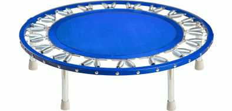

~ Needak Rebounders ~
"Trampolines"

"All Rebounders Are NOT Created Equal"
High-quality materials and superior American workmanship combine to bring you the top quality, Needak? rebounder. Some consumers have unknowingly purchased quality deficient, Asian imports that mimic the Needak? Soft-Bounce? rebounder.
Specifications for the Perfect Rebounder:
"No one manufacturer has a lock on the market for rebounders, but some are better manufactured than others. It's best, perhaps, to purchase your exercise unit directly from the manufacturer.
Most important for excellent rebounding is the mat material. It should give no stretch during the downward landing, while at the same time providing a resilient rebound. Such a mat will be made from Permatron? material, which has a smooth finish. The Permatron? is resistant to ultraviolet rays, doesn't break down as do other fabrics, and allows no moisture absorption. Part of the specifications for a perfect rebounder is that its mat will be sewn together using 5760 stitches of high-grade nylon thread with two layers of strong polypropylene webbing stitched around the mat's edges.
Attached to a heavy-grade, all steel round frame should be an oversize spring mechanism holding four-inch-long, custom-made jumbo springs which deliver a soft bounce. Thirty-six springs made of quality wire will hold the mat to the frame. The springs should be shielded by a protective cover. Individual spring mounting pins prevent frame wear. Tapered coils help to give extended wearability to such springs. (Untapered coils allow low-quality springs to break frequently, requiring replacement.) Replacement springs must be available directly from the manufacturer since retail distributors seldom stock spare springs.
The balance bar is also available for those who would like it.
Visit our Gift Ideas section!
"The news isn't that fruits and vegetables are good for you.
It's that they are so good for you they could save your life."
By David Bjerklie
TIME Magazine - October 20, 2003, p. 50
Disclaimer Notice:
The information presented on this website is for educational purposes only,
and not intended to replace advice from a licensed healthcare professional.
If you are having symptoms you cannot explain, you should consult with a
licensed healthcare practitioner for diagnosis and treatment.
Call us today!
(970) 250-5612
Kenton & Joan Miller
Certified Natural Health Counselors